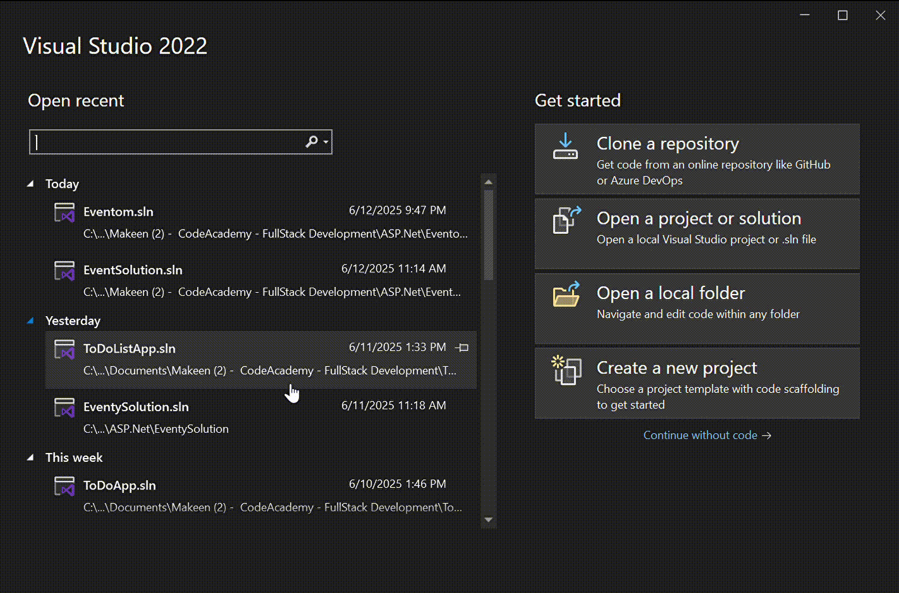

٢. إضافة مشاريع Class Library
نضيف مشروع Class Library لكل من:
- Business Logic Layer:
- Data Access Layer:


أول خطوة بناخذها عشان نبدا نبرمج التطبيق هي نفتح Blank Solution لأنه مثل الدفتر الفاضي اللي نكتب فيه كل أفكارنا وننظم مشاريعنا.
بمجرد ما نفتح الـBlank Solution، بنبدأ نضيف المشاريع الخاصة بكل طبقة، ونربطها مع بعض بطريقة منظمة.
نضيف مشروع Class Library لكل من:
نضيف مشروع ASP.NET Core MVC، لأنه يوفر لنا إطار عمل لبناء صفحات ويب تفاعلية وسلسة.